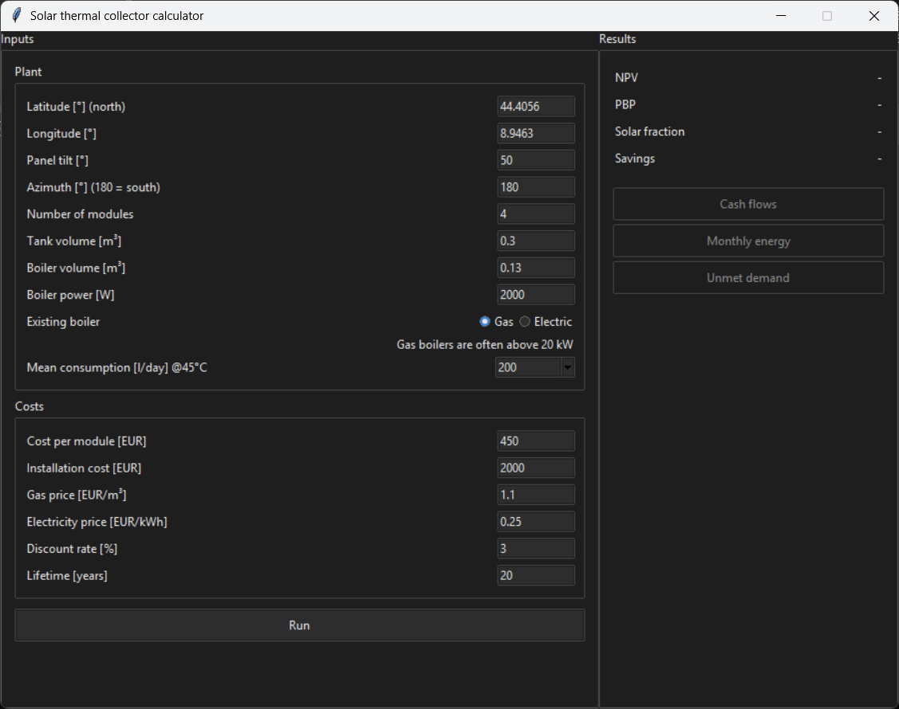
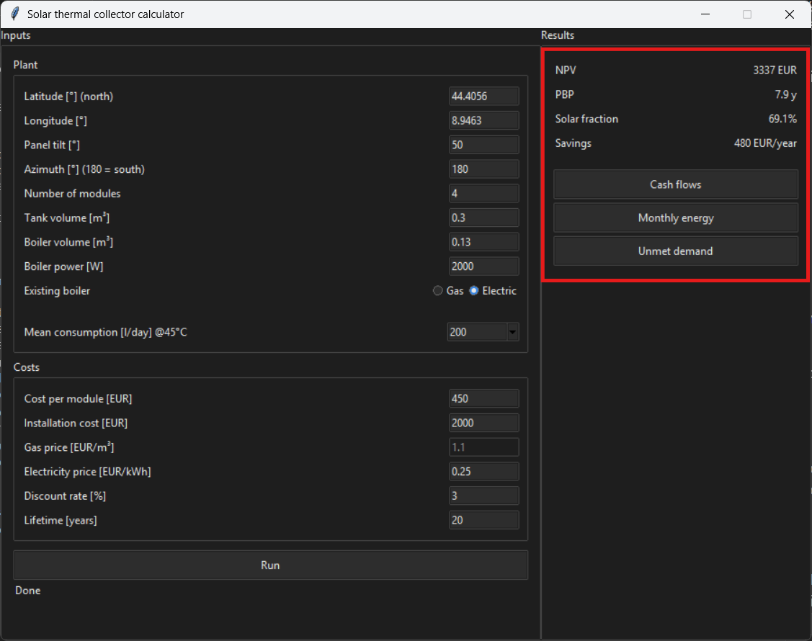
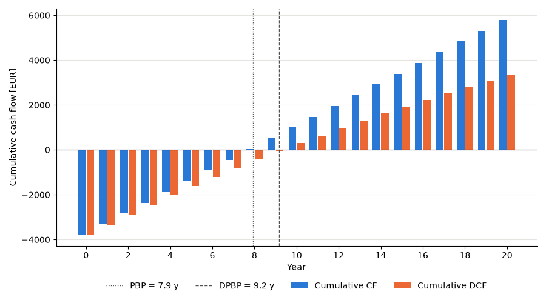
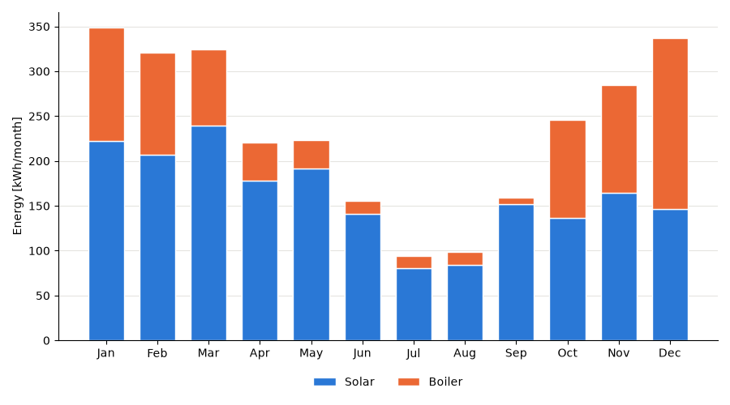
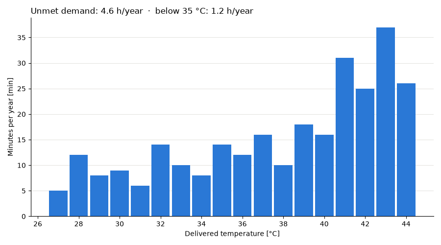
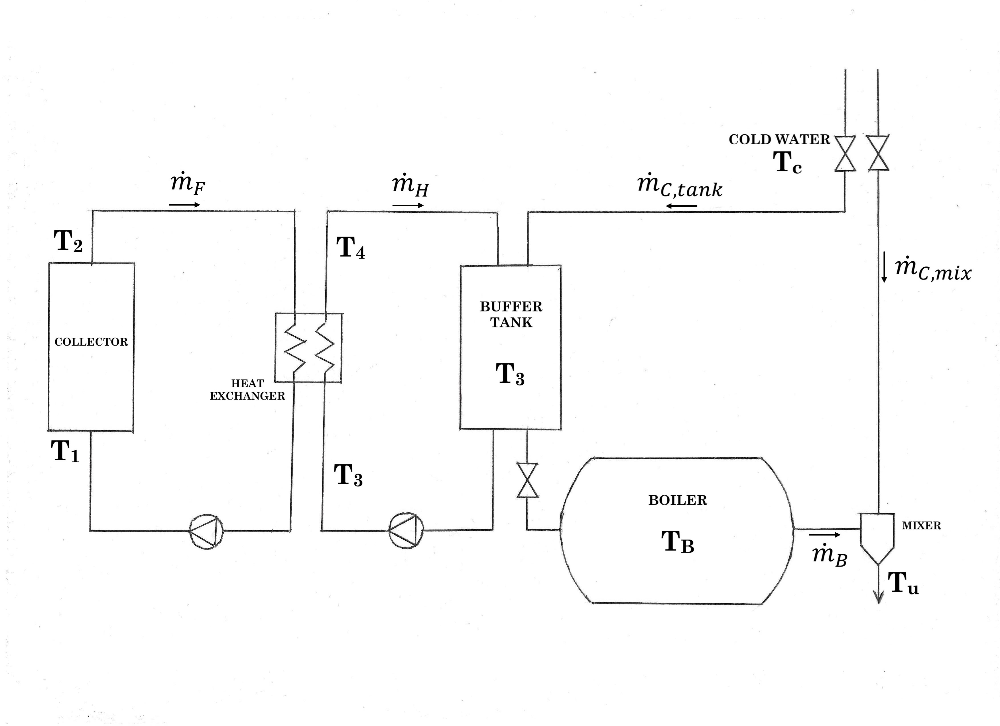

Solar thermal collector plant for DHW
In this project I built a model in Python of a DHW (Domestic Hot Water) plant for a single-family house using solar thermal collectors. The user can personalise the inputs (plant location and specifications, utility prices, average consumption) and check the results: a collection of the most relevant financial and plant performance indicators.
The code is available on GitHub, and a free web app version will be available soon.
The app: what it does and how to use it

The app layout is essential: inputs on the left and results on the right. The inputs are also split between plant specifications and cost items. Here are some notes:
- Number of modules: number of modules of flat plate collectors, specifically Kloben FSK 2.0 (download the data sheet). At the moment it's not possible to select other collector models.
- Tank volume: the volume of the buffer tank, used to store thermal energy in the form of hot water. Its role will be explained in detail in the model section.
- Boiler volume: while the tank volume is a project design parameter, this is supposed to be the volume of the boiler that the user already has before the implementation of the collectors. The user can also select whether it is a gas or an electric boiler (this will have a big impact on the financial analysis).
- Module and installation costs: the plant CAPEX is split into the cost of the modules and the installation cost. The latter is an estimate that includes everything else: labour, piping, pumps, buffer tank...
- Gas and electricity prices: they are assumed to be fixed for the whole lifetime of the plant.
Once the user has set the inputs, they can start the simulation by pressing "Run".

NPV (Net Present Value), PBP (PayBack Period), solar fraction and annual savings are displayed. Solar fraction is the ratio between the useful solar energy and the load demand or, in other words, how much of the energy necessary to heat up the water has been provided "for free" by the Sun.
The user can also generate three useful plots:
-
Cash flows: simple and discounted. The simple and discounted PBP are
highlighted, if present (it may happen that the PBP falls after the plant lifetime or, for
the discounted PBP, is never reached).

-
Monthly energy demand: it provides an intuitive visualisation of the solar
fraction over the months.

-
Unmet demand: this is most important for electric boilers, since gas
boilers typically have enough power to avoid this issue. It counts the instances in which
the user receives water below the desired temperature, highlighting the cases in which the
user receives water colder than 35 °C. The only ways to mitigate this problem are to
increase the buffer tank volume, the boiler volume or the boiler power.

Methodology
When the user presses "Run", the program simulates an entire year of operation, with a time resolution of just 1 minute, using weather data (solar radiation and air temperature) corresponding to the user's location, obtained from PVGIS (European Commission, Joint Research Centre) through the pvlib package [1, 2]. This data is based on a multi-year window (2013–2023) and forms a so-called typical meteorological year (TMY), built by selecting the most representative year for each calendar month, since using the data of a single year could introduce a significant error if that year was an outlier.
The load profile, i.e. the amount of hot water requested over time, is computed using the software DHWcalc (version 2.02b, University of Kassel) [3]. Given a mean daily volume, the software randomly places individual draw-offs along the year with a statistical approach, following the flow rate, duration and share of each draw-off category and their probability over the day, the week and the seasons. 15 profiles were generated (from 50 to 400 average l/day, step 25), so the user can choose among these. The configuration file is available and one can check all the settings used to generate the profiles. In general, a reduced hot water consumption in summer is assumed, with 2 weeks of holiday with no consumption at all.
The cold water temperature \(T_c\) is not a fixed value: it changes day by day and is estimated from the air temperature of the chosen location, with the correlation by Burch and Christensen [4]:
\[ T_c = \bigl(\overline{T}_{air} + 6\bigr) + r\,\frac{\Delta T_{max}}{2}\,\sin\bigl[0.986\,(d - 15 - \lambda) - 90\bigr] \] \[ r = 0.4 + 0.01\,\bigl(\overline{T}_{air} - 44\bigr), \qquad \lambda = 35 - \bigl(\overline{T}_{air} - 44\bigr) \]Temperatures are in °F and the angle is in degrees. \(\overline{T}_{air}\) is the annual average air temperature, \(\Delta T_{max}\) the difference between the warmest and the coldest monthly average, \(d\) the day of the year and \(\lambda\) the delay in days with respect to the air temperature. For the default location (Genoa), \(T_c\) ranges from 11.8 °C to 20.6 °C over the year, with an average of 16.2 °C.
Plant model
Layout

Collector
The collector is modelled with a lumped parameter model, solved with explicit Euler with a reduced time step (each minute is split into 4 sub-steps, \(\Delta t = 15\) s):
\[ \dot Q_{coll} = A\,\bigl[\eta_0\,G_T - a\,(T_2 - T_{air}) - b\,(T_2 - T_{air})^2\bigr] \] \[ T_2^{\,k+1} = T_2^{\,k} + \frac{\Delta t}{C_{th}}\Bigl[\dot Q_{coll} - s_p\,\dot m_F\,c_{p,F}\,\bigl(T_2^{\,k} - T_1\bigr)\Bigr] \]\(G_T\) is the irradiance on the collector plane, \(\eta_0\), \(a\) and \(b\) the optical efficiency and the first and second order loss coefficients of the collector, \(A\) its total area, \(C_{th}\) its thermal capacity and \(s_p\) the pump state (1 = ON, 0 = OFF).
The heat transfer fluid used for the collector loop is a mixture of 60% water / 40% propylene glycol by mass.
Heat exchanger
It is modelled as a quasi-steady counterflow heat exchanger with the \(\varepsilon\)-NTU method, since the 1 minute time step is sufficiently small to ignore the transient effects:
\[ C_H = \dot m_F\,c_{p,F}, \qquad C_C = \dot m_H\,c_{p,w}, \qquad NTU = \frac{UA}{C_{min}}, \qquad C_r = \frac{C_{min}}{C_{max}} \] \[ \varepsilon = \frac{1 - e^{-NTU\,(1 - C_r)}}{1 - C_r\,e^{-NTU\,(1 - C_r)}} \quad (C_r < 1), \qquad \varepsilon = \frac{NTU}{1 + NTU} \quad (C_r = 1) \] \[ \dot Q_{hx} = \varepsilon\,C_{min}\,(T_2 - T_3), \qquad T_1 = T_2 - \frac{\dot Q_{hx}}{C_H}, \qquad T_4 = T_3 + \frac{\dot Q_{hx}}{C_C} \]Both loops work at a constant flow rate, so \(\varepsilon\) is constant. They are sized to have the same heat capacity rate, so in practice \(C_r = 1\).
Buffer tank
It is a well-mixed vessel, with constant mass as the heat exchanger is a closed loop and all the water drawn by the boiler is instantly replaced by the cold water supply. Again it is solved with explicit Euler (\(\Delta t = 1\) min), since its characteristic time constant is the slowest of the entire plant.
\[ T_3^{\,k+1} = T_3^{\,k} + \frac{\Delta t}{M\,c_{p,w}}\Bigl[ s_p\,\dot m_H\,c_{p,w}\,\bigl(T_4 - T_3^{\,k}\bigr) + \dot m_{C,tank}\,c_{p,w}\,\bigl(T_c - T_3^{\,k}\bigr) - UA_{tank}\,\bigl(T_3^{\,k} - T_{amb}\bigr)\Bigr] \]\(M\) is the mass of water in the tank, \(s_p\) the pump state (1 = ON, 0 = OFF), \(\dot m_{C,tank} = \dot m_B\) the cold water replacing what the boiler draws, \(T_c\) the cold water temperature, \(UA_{tank}\) the heat loss coefficient of the tank and \(T_{amb}\) the temperature of the room where it is installed.
Pump controller logic
The pumps are both fixed speed and therefore work only in ON/OFF mode, controlled by a relay with a dead band to avoid constantly switching ON and OFF. There are two conditions to check.
First, the heat transfer fluid in the collector must be hot enough to actually heat up the tank: especially at night, if the pump stayed on, the heat flow direction would reverse and the collector would dissipate the tank's heat to the outside. The pumps therefore switch on when \(T_2 > T_3 + 4\) °C and off when \(T_2 < T_3 + 2\) °C.
Moreover, a protection logic is implemented to prevent situations in which the tank would reach temperatures close to the boiling point, for safety reasons: the pumps stop when the tank exceeds 75 °C and can restart only once it is back below 72 °C.
Boiler
It is modelled in the same way as the buffer tank, but with an additional heat source, also controlled by a relay to maintain its internal temperature around 60 °C (ON below 57 °C, OFF above 63 °C).
Mixer
Since the boiler is kept at around 60 °C and hot water is requested at 45 °C, the water from the boiler is mixed with cold water. The flow rate drawn from the boiler to deliver the requested flow \(\dot m_u\) at temperature \(T_u\) is:
\[ \dot m_B = \dot m_u\,\frac{T_u - T_c}{T_B - T_c}, \qquad \dot m_{C,mix} = \dot m_u - \dot m_B \]If the boiler is too cold (\(T_B < T_u\)), the whole flow comes from the boiler (\(\dot m_B = \dot m_u\)): the user receives water at \(T_B\) and that minute is counted as unmet demand.
References
[1] K. S. Anderson, C. W. Hansen, W. F. Holmgren, A. R. Jensen, M. A. Mikofski, A. Driesse, "pvlib python: 2023 project update", Journal of Open Source Software 8(92), 5994, 2023. doi.org/10.21105/joss.05994
[2] A. R. Jensen et al., "pvlib iotools: Open-source Python functions for seamless access to solar irradiance data", Solar Energy 266, 112092, 2023. doi.org/10.1016/j.solener.2023.112092
[3] U. Jordan, K. Vajen, "DHWcalc: Program to generate domestic hot water profiles with statistical means for user defined conditions", Proc. ISES Solar World Congress, Orlando, 2005.
[4] J. Burch, C. Christensen, "Towards development of an algorithm for mains water temperature", National Renewable Energy Laboratory (NREL), 2007. osti.gov/biblio/981988